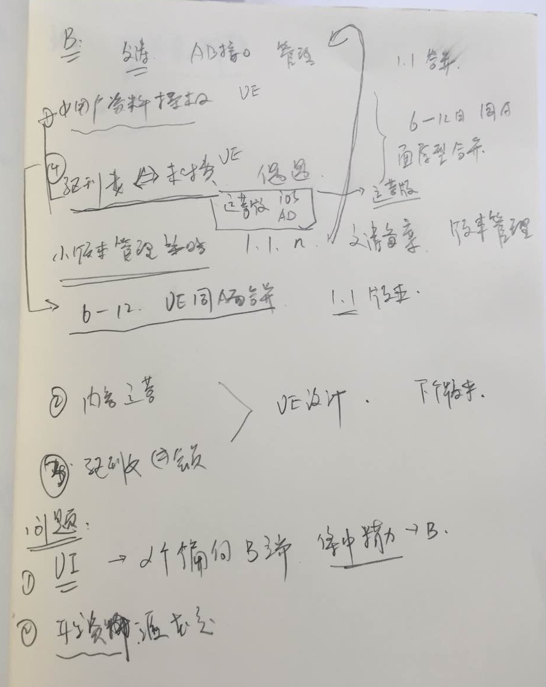
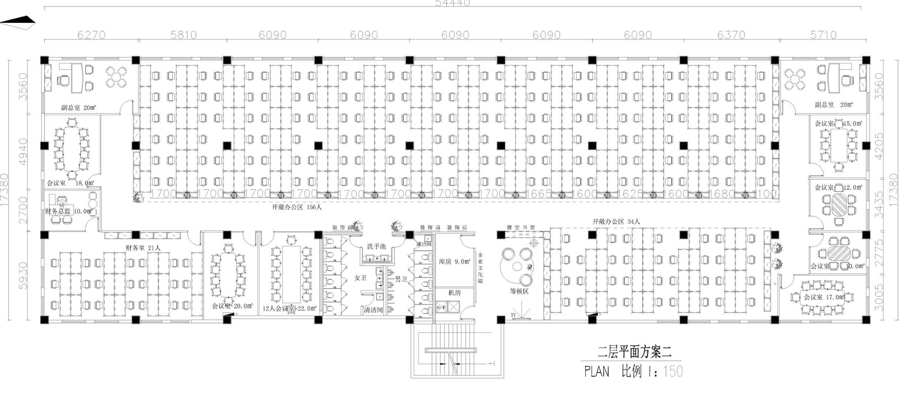
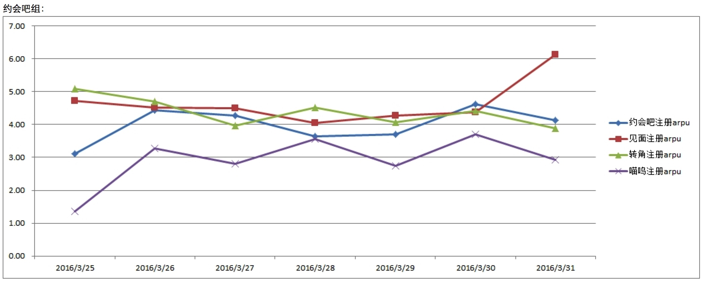

在输入框中输入
~/Library/Containers/com.tencent.xinWeChat/Data/Library/Application Support/


在输入框中输入
~/Library/Containers/com.tencent.xinWeChat/Data/Library/Application Support/






故事一：基因-移动
故事二：初心-大众婚恋交友
故事三：方案-婚恋前置
故事四：觉醒-品牌广告
故事五：革新-尊重、赋权女性
故事六：洞察-帮助男性破冰
1， 我在07年左右接触移动互联网行业。
2， 那时候PC端的互联网已经非常成熟了，已经从web1.0时代开始过度到web2.0时代
3， 移动互联网的体验还非常糟糕：最牛的手机品牌NOKIA使用wap1.0上网，只有蓝色的文字链接可点，网速非常缓慢，打开一个几十K的图片通常需要等好几十秒。
4， 但是，移动互联网雏形已经出现。它不依赖于不方便携带的电脑、不依赖于网线，当时对我而言，像是打开了新世界的大门，有一种未来，可以随时随地使用互联网。
5， 我当时判断，依据硬件界的摩尔定律（每18-24个月硬件将迎来一轮升级），硬件的难题将不会困扰移动互联网太久。更为便捷、易用的移动互联网在未来几年将颠覆互联网圈。
6， 当时的行业普遍认知是移动互联网不是独立的市场，而是传统PC互联网市场的延伸。但我认为并非如此，移动互联网实际上激活了中国最广大的人群，他们因为各种原因，没有试用电脑的习惯，原来是互联网0消费人群，随着移动互联网的发展，他们将变成新互联网消费群体，使用的是移动互联网的服务。他们跟传统白领互联网有巨大的差别，可以形成独立市场，而这个独立市场的规模因为人群基数的问题，会比白领市场大很多。移动互联网时代和PC互联网时代的差别导致传统的互联网模式很难延伸过来，本质还是用户群体上的差别。
7， 在08年左右，我决心开始进行移动互联网创业。
8， 当时面临选择：做移动梦网下的产品，还是开放体系下的产品（free wap），我坚持认为，移动互联网的未来，应该是从移动梦网的封闭模式转向更为开放的模式，会有非常多根据不同的细分用户需求生长出来符合移动互联网特性的产品。我选择了做free wap。移动互联网要从移动梦网的封闭模式转向开放模式。
9， 在2011年左右，摩尔定律带来了智能机的普及，移动互联网浪潮爆发。对大多数互联网圈的人来说，是白领精英阶层从电脑时代转向移动时代，他们基于白领精英人群的思维习惯做产品迁移；而对于一直做移动互联网的我们而言，技术的革新意味着用户终于能在移动互联网上获得更好的体验。我们先前针对于移动互联网的渠道铺设和产品研究也到了厚积薄发的时刻。对趋势的正确判断和充足的准备，让我们捷足先登，在移动婚恋这件事上领先了。
1， 当时我们在招聘、电商和婚恋交友几个方向里做选择。那段时间我很焦虑，睡不着觉，有时候半夜两点出去吃夜宵。一天看烧烤老板正在用手机上网，就跟他聊起来。他一天赚的也不少，一个月一万多，但是最大的问题却是找不到对象，并不是钱的问题，而是没有机会也没有时间认识到异性，“网上还能认识姑娘？”“哪里有时间上电脑？”“一定很复杂吧？“
2， 我们后来调研了下，发现这是一个普遍现象。婚恋难题作为社会难题，年年讲，年年提，但传统的婚恋中介所，资源太少，价格太高，而传统互联网婚恋服务商虽然提供了更多的机会，但因为PC基因，针对的人群主要一二线、精英白领；金字塔中下端庞大的人群的婚恋交友难题并没有人关注。
3， 我们认为，大众群体才是中国社会最广泛的人群。他们有对婚恋交友的强需求，有移动互联网的使用习惯，但需求完全没有被满足。服务大众的移动婚恋市场，正是巨大的蓝海市场。
4， 我们服务的大众阶层，和精英阶层相比差异很大：他们弱于思考和选择，弱于复杂的操作流程，对个性化需求不甚挑剔，首先需要的是更多的机会。所以我们在多次产品测试后，最终给他们提供了最适合移动端的平台性服务：标准化、低门槛（注册、使用、付费），高机会。
1， 我们花了几年时间通过大数据研究摸索用户需求，并不断调整有缘的产品模式才形成了现在的基本框架。之前，我们做过免费+增值的模式，并强化社交元素，试图通过增强用户粘性来促进他们之间的交互、甚至是恋爱过程。后来我们发现，婚恋交友类产品本质上属于陌生人交友，而非工具，是较为低频应用，用户来这里，最主要的目的是“多一个机会”寻找可能的对象（相比线下介绍，互联网婚恋的置信度较低）。而我们需要做的事情是，让他们有更多的机会能聊上异性。
2， 在这个过程中，我们意识到互联网解决婚恋难题的方案可能并非是提供最后的结果。在用户聊上之后，还有更多交往、选择的过程并非在有缘、甚至是互联网上实现。我们对婚恋问题的解决方案，是“前置婚恋预案”：即让用户在不那么着急结婚的时候，拥有更多选择的机会，能够更有效的进行怀有婚恋目的的聊上天。
3， 我们提供了一个和竞品不一样的解决方案，并围绕着这个解决方案做了一系列的产品、渠道、品牌方面的动作。我们的用户更为年轻，集中在23岁左右，他们有时间为未来的结婚对象做挑选。他们更看重彼此的沟通，而非硬件条件；更轻松，而非沉重着急。我们认为这才是婚恋的本质：由自发情感而非社会压力导向的婚姻。
4， 我们前几年主要在服务是80后、85后的年轻人，现在服务的人群超过一半是90后。他们正好是18-26岁之间，适婚年龄之前。非常有意思，他们体现出来和前几年的年轻人不太一样的地方，我们经常会看到有90后的自我独白里写着”我就是喜欢做饭”的男孩子和“我就是喜欢热闹喜欢泡吧”的女孩子：他们更有独立精神，更愿意做自己，追求自己喜欢的人和事情，不太在乎别人的看法。我们把他们的婚恋观称之为“新自由恋爱主义”，和被社会舆论绑架的80后相比，他们无疑是更具有”独立精神“的一代。
1， 到13年时，依靠我们非常强大的渠道运营能力，有缘的市场体量已经非常大了。
2， 后来在13年10月份的时候，我们想对潜在用户做更多的了解，就深入到二三四线城市去做了一轮访谈，大概开了七八场座谈会，主要是了解这些年轻的单身人群真实的经历和困境。我对那次调研印象特别深刻，和08年那时候我和烧烤店老板聊的居然非常相似：讲生活中没有接触异性的机会，可能需要付出的高额成本和频频受挫的痛苦。我们发现，他们很多人都不了解有缘网针对于他们的需求提供了解决方案。
3， 我们自己觉得已经做的很大了，却依然没有能帮助到他们，因为他们不知道我们。那天半夜十一点多，我们在驻地楼下的小面馆吃晚饭，我当时就想，我们这套对于婚恋问题的解决方案，应该让更多人知道，他们可以通过有缘网解决在茫然期的婚恋问题，不至于拖到难到不能难的时候，付出更高的代价，可能还解决不了。所以我们决定做品牌。
4， 我们认为，婚恋是较为低频的服务，大众用户并不太关注品牌差异，而更关注品牌背书，他们对品牌的信赖感主要源于“大品牌”。第一次高强度曝光，我们的核心诉求就是将有缘网强化为“找对象”的顶尖品牌，建立品牌和品类的强相关。基于此，我们的广告策略参考了脑白金洗脑模式， “狠砸”“人多机会多”，力求给受众留下深刻的“有缘网”“找对象”和”人多机会多“的记忆。
5， 我们第一次大规模广告投放是在春节期间，广告环境较为嘈杂，观众注意力也不一定集中，声音作为广告最核心的因素，非常需要抓人和有记忆性。而有缘试图所传递的信息是，找对象并不是一件困难的事情，应该轻松快乐的完成。周星驰所饰演的角色基本都是年轻的小人物，在年轻人中记忆也非常有代表性。周星驰的声音同时满足记忆唤醒、情感共鸣、轻松愉快的几个要素，非常符合我们的品牌调性。后面的调研显示，周星驰的声音，标志性的笑声“哈哈哈哈”和”一亿XXXX人“都给观众留下了非常深刻的记忆。
6， 广告投放渠道也是跟受众息息相关的。大众群体的触媒习惯依然是电视为主，生活中的互联网广告、公共交通为辅。我们主要的费用还是投给了央视和一线卫视。不过公共交通投放持续时间较长，大家记得比较多。这一点58同城和赶集也做得很好，我们曾经一度被用户和网友戏称为“公交三害”。
7， 我们现在已经是一个有大众认知基础的大品牌，但是在影响力上我们还有更为远大的目标。介于男女比例不均衡，在未来婚恋问题会越来越艰难，我们有一套非常好的互联网婚恋预案提供给社会大众，也真心相信正向的婚恋价值观，希望能通过我们更多的发声能帮助他们了解我们、真正的解决问题。在手段上，不仅限于之前的脑白金式“找对象上有缘网”这套电视广告，我们还会加强公关的声音，让更多人听到我们的理念，也会加强泛娱乐化营销的方式，让年轻人（我们的目标受众）能够在生活中更为品牌的感知到我们。
1， 用户来网上寻找对象，最大的需求是能聊上，我们也一直希望给用户提供更好的生态和体验，让他们有很多机会能聊上异性。
2， 我们对两性关系做了很深入的研究。在生物本能中，女性是等待和挑选的一方，通常都是男性花费大量心思来求偶，获取女性的关注从而能生育下自己的基因；而在漫长的社会演化后，女性，尤其是中国女性，在婚恋交友市场上相较于男性更为被动、更为弱势。常常可以听到的很多社会热点都不断的在讲女性所遭受的社会偏见、和不平等的待遇，比如“柳岩伴娘事件”、“剩女歧视”、“女博士歧视”、“待价而沽”……。
3， 我们认为，女性应该在文明社会获得更多的尊重，获得匹配与生物本能的地位：选择更为喜好、更为优质的基因繁衍更好的后代。她们应该获得婚恋的主导权，而非获得社会有色眼光的对待，甚至需要付出更高的代价去选择配偶。尤其是90后女性，她们已经体现出来更为独立的精神，愿意追求自己喜欢的，不愿意被别人的择偶观所左右，但社会却没有跟上她们的进步。我们希望从自己做起，破除女性歧视，支持男女平等。
4， 有缘网是这样做的：
- 女性免费，让更多的女性能够使用我们的服务。
- 女性通过设置关注的问题，来面试男性，选择是否和他继续交流。
- 平台筛选更有意愿找对象的男性，才能真正和女性沟通上。
5， 经过长时间的运营，我们发现，基于两性不同的策略和维护，登录的活跃用户男女比例趋近于1:1时，两性会话率和用户体验数据会达到一个最好的状态，我们认为这种生态才是有利于平等交流的良好生态。 后来“1:1”成为了我们的用户生态标准，我们也用它来判断和校验所有”两性婚恋交友应用“，符合这个标准的，我们才认为是非常棒的产品。可以说，我们的“男性会员制”、大数据“滤网”系统、“标签匹配体系”、“QA体系”、“有缘小助手”等产品功能和策略都在为登录活跃用户男女1:1服务。
1， 在我们的数据表现和研究里发现，现在的年轻男性和几年前的诉求已经不一样了。我08年聊的烧烤店老板和13年做的三四线男性调研，男性的痛苦主要还在机会少；而现在随着移动互联网应用的飞速发展，90后的年轻男性通过网络能够大量接触到女性，但接触并不意味着能聊上。通过网络进行婚恋交友的男性越来越多。他们的“找不到”不再是浅层的“没有人”，而是“聊不上“。
2， 存在大量的男性并不懂和女性的沟通技巧，“破冰难题“是他们最大的难题。我们早年曾经做过由男性主导的两性沟通统计，数据显示“四句死”的几率是最高的，即在两性条件“配对”较为成功的情况下，由男性主导发起的会话互动50%不会超过四个回合，“你好”、“你多大”、“你在哪”“做什么工作”后男性难以找到继续的话题，极端情况甚至会出现一上来就“我爱你你爱我么”的情况。这种害羞和鲁莽同时存在的状况，让他们在通常的交友软件上屡屡受挫。相较于他们的前辈，90后的年轻男性的沟通能力也并未有所进步。有段时间甚至出现过一个7天学费7000元的所谓的恋爱开办培训班的新闻，培训班教年轻男性如何与女性搭讪、聊天，除此之外还有无数的打着”泡学“理论的网站、微信授课群，都在试图从这个需求上赚钱。
3， 有缘网采用的是傻瓜式破冰模式。由于主导权回归了女性，在女性设置了最为关心的问题后，男性可以收到他喜欢的女孩子最为关心的问题和几个选项答案。他只需要进行选择，即可对女性进行回复。并且，在过滤意愿、女性也愿意跟他聊天的基础上，他还可以就女性关心的这几个问题继续聊下去。比如，如果女性关心”我们出去吃饭的话，你会愿意买单吗？“这样的问题，男性只需要选择”我来付款“或者“我们AA”、“到时候再说”即可回复，下次他们聊上的时候，男性就可以顺理成章的问出，“你喜欢吃什么？”了。


1、 大品类 低频 高毛利
2、 品牌打法
3、 业务（故事）同资本结合
1、刘颖慧考试环境说明，投出数据情况
2、王楠讲诉对照组的数据提升情况
3、杨华，文涛，严欣 分别讲述一下产品情况及数据分析
4、纪磊、广至、远炜 分别说说使用感受
5、讨论为何没有达到当初的目标： 产品形态提升为何没有大幅度提升arpu！ 原因是什么？？？能输出什么结论，提供什么借鉴经验



假设： 在特定的用户人群中，不同产品形态的产品能够对比多名称，可提升arpu 50%以上。
结论：
数据上并没有证明假设，执行层面存在着瑕疵。
更深的刺激；
聊天的可能性 还是 约会的可能性
多产品的测试并没有支持
第一，第二 是没有问题的，没有竞品可以替代
目前的主要问题，还是策略层的交互形式粗暴单一（没有代入感，循序渐进），真实性。
如何加强信赖感、真实感
从周六的接受了产品方向的任务以来，一直觉得重担在身，压力山大。本周主要是对有缘网产品进行体验，思考和各种讨论，不知道理解是否正确，写出来，让大家讨论讨论，拍拍砖。
1、 从产品的基础的『大众，低成本，售卖可能性』定位，这个已经达成共识，目前在市场上是领先的；
2、 产品结构，即提供给消费者的体验历程，通过策略引导逐步加强刺激诱发想象空间，推动用户越过付费门槛成为会员，然后进行实质性的交友过程。这是个蛮传统的商业结构，友缘策略应用能抓住荷尔蒙用户最核心的痒痒肉，如果能合规，这种策略方式在市场中也是最先进的。
3、交互表现层，这一块是被吐槽最多，产品表现脱离主流趋势，用户不能形成第一眼信赖；交互形式没有代入感，粗暴单一无下限（在信的数量、深度、内容上不断下猛药），稍有智商会质疑真实性，最终只搞定『智商最傻需求最强』的用户。用户被市场不断教育，产品的停滞不前，核心用户群已经在渐渐远离，这个是我认为的产品最核心短板。
如果1和2都不是主要问题，对3的改进本质就是营销升级，远炜提供了一个模型，通过对用户的分类进行不同的营销策略，形成全面的营销升级的思考，如下：
| 用户 | 需求 | 策略 | 方向 | 项目 |
|---|---|---|---|---|
| 傻 | 强 | 既有客户，挖潜 | 继续深化策略 | 富媒体，涨价，唤醒进行多次托收 |
| 傻 | 弱 | 摇摆客户，唤醒 | 降低门槛，付费拉长 | 低成本体验，召回，临门一脚的促销，托收跟上 |
| 奸 | 强 | 新兴客户，争取 | 提升信赖感，策略真实性 | 产品力提升，交互方式升级，付费前用户的诱饵质量 |
| 奸 | 弱 | 放弃 |
压力山大，不知道是否方向正确，希望大家能就这个发表一下各自的看法。
市场发声正面压过负面，合理的故事包装
资源情况： 产品研发部 2组，开发一部，开发2部，意识融通，AD组，支付组
各位，继周二的产品方向讨论会以后，各组已经了解到友缘产品在市场上的严峻形势，市场已经倒逼咱们不得不做出改变的时候了，我先画个框，希望大家在这个框架下思考，拿出可行的产品方向来。
我从以下三个层面进行了思考：
1、 产品基础定位：『大众，低成本，售卖可能性』，这个已经达成共识，目前在市场上是领先的；
2、 产品结构，即提供用户的体验历程，通过策略引导逐步加强刺激诱发想象空间，推动用户越过付费门槛成为会员，然后进行实质性的交友过程。这是传统的商业结构，个人感觉，友缘对策略应用基本抓住了『为交友可能性买单』的最强推力，如果能合规，这种策略方式在市场中也是最先进的。
3、交互表现层，这一块是被吐槽最多，产品表现脱离主流趋势，用户不能形成第一眼信赖；交互形式没有代入感，粗暴单一无下限（在信的数量、深度、内容上不断下猛药），稍有智商会质疑真实性，最终只搞定『认知能力低需求旺盛』的用户。用户被市场不断教育，产品的停滞不前将使得核心用户群渐渐远离，这个是我认为的产品最核心短板。
一句话概括：产品定位结构没有问题，营销打法需要跟上时代，用消费者的玩法来提供友缘的服务。
下面是一个简单的模型，将用户分为四个核心人群，我分别提出了营销策略：
| 用户认知 | 用户需求 | 代号 | 策略 |
|---|---|---|---|
| 弱 | 强 | A（既有客户） | 挖潜 |
| 弱 | 弱 | B（摇摆客户） | 唤醒 |
| 强 | 强 | C（新兴客户） | 全力争取 |
| 强 | 弱 | D（友军客户） | 暂时搁置 |
各位组织部门在此框架下对ABC三块进行讨论拿出靠谱方向来，为接下来打仗定好方向。
2016年第一季度马上就要结束了，在第一季度商业化中心基本完成K值提升的KPI指标，有的部门甚至超额完成目标，在第一季度大家的努力和成果还是值得肯定的，但随着市场竞争的加剧以及渠道的快速变化，产品部门原有的工作流程、方式和方法论，已经不能及时的响应商务部门的需求，不能够适应市场的快速变化了，产品部门的工作成果未能体现出对公司收入、毛利的提升效果，因此明确产品如何才能跟随商务及市场变化和需求的节奏、紧跟时代潮流，真正成为公司建立核心市场竞争力的有力推手，是商业化中心亟需思考和明确的问题，这就需要找到打开产品空间的思路、方式，明确产品方向和后续规划。
大家可以结合下面的几个问题进行思考，下面的问题只是例子，大家可以不局限于自己所做的工作，可以从不同的视角或角色进行思考，可以从产品的角度、产品经理的角度，从商业化中心或公司业务发展宏观的层面等等进行思考和设想。
思考:
1、自己现在正在做的事项，能够为公司在产品方面的进一步发展，拓展更大的发展空间吗？为什么呢？
2、如果你就是公司产品的负责人，那么对下面的问题如何理解和解决呢？
A、公司的产品解决了用户的哪些痛点，我们的产品对于用户的价值是什么？本质是什么？我们满足用户的需求了吗？
B、目前公司产品的问题在哪里？是什么束缚了公司产品的发展，当前我们的瓶颈在哪里？那么我们该如何提升产品的竞争力，适应市场的快速变化呢？
C、如果要让公司的产品实现质的飞跃，你会从哪几个方向入手呢？为什么？


女性用户
首先 气氛 + 可玩性
基本需求： 找到人
直播： 魅力变现 + 时间变现
社交1.5 美丽约
直播 社交2.0
女性收到钱 找到存在感
供给资料 ： 资料内容 + 数量